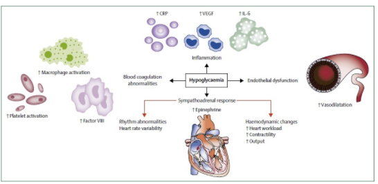

1Definicion
La hipoglucemia es la complicación aguda más frecuente de la diabetes mellitus (DM). Asimismo, es el factor limitante más importante en el manejo del tratamiento de los pacientes con DM tipo 1 y 2 que reciben insulina y fármacos secretagogos.
La guía de práctica clínica de Canadá define la hipoglucemia con la tríada de Whipple:
1. Aparición de síntomas autonómicos o neuroglucopénicos.
2. Un nivel bajo de glucemia ( 72 mg/dl o 4,0mmol/l) para pacientes tratados con insulina o productos que provocan la secreción de insulina.
3. Mejoría sintomática de la hipoglucemia tras la terapia con hidratos de carbono.
FISIOPATOLOGÌA
La hipoglucemia activará el sistema simpático suprarrenal causando una abundante secreción de catecolaminas las cuales ejercen importantes efectos hemodinámicos (biofísica que se encarga del estudio de la dinámica de la sangre en el interior de las estructuras sanguíneas como arterias, venas, vénulas, arteriolas)y hemorreológicos (estudio de las propiedades de flujo de la sangre y sus elementos de plasma y células.).
La estimulación simpática provoca un rápido incremento de la frecuencia cardíaca, contractilidad miocárdica y gasto cardíaco, y la presión sistólica central cae debido al aumento de la elasticidad de los grandes vasos.
El potasio plasmático desciende rápidamente, induciendo cambios electrofisiológicos y electrocardiográficos que podrían provocar conducción y repolarización cardíacas anormales.
Por otra parte, en respuesta a la hipoglucemia se producen cambios agudos en la coagulabilidad de la sangre, adhesión celular, disfunción endotelial e inflamatoria y marcadores. Estos efectos tienen el potencial de inducir al riego intravascular y trombosis.
El antecedente de hipoglucemia atenúa la respuestas autonómica al estrés cardíaco durante varias horas en personas sin diabetes, y este deterioro transitorio de los reflejos cardíacos autonómicos los cuales podrían afectar la vulnerabilidad cardíaca a un estrés posterior.

-SIGNOS Y SÍNTOMAS
La hipoglucemia es la complicación aguda más frecuente de la diabetes mellitus (DM). Asimismo, es el factor limitante más importante en el manejo del tratamiento de los pacientes con DM tipo 1 y 2 que reciben insulina y fármacos secretagogos.
-Primeros Signos
Los signos y síntomas tempranos de hipoglucemia diabética incluyen lo siguiente: Temblores ,Mareos ,Sudoración,Hambre ,Latidos rápidos del corazón ,Incapacidad para concentrarse ,Desorientación ,Irritabilidad o mal humor ,Ansiedad o nerviosismo ,Dolor de cabeza.
-Signos y síntomas nocturnos
Si la hipoglucemia diabética se produce cuando estás durmiendo, estos son los signos y síntomas que pueden despertarte: Las sábanas o la ropa de cama húmedas debido a la transpiración ,Pesadillas, Cansancio, irritabilidad o desorientación cuando te despiertas
-Signos y síntomas graves
Si la hipoglucemia diabética no se trata, pueden manifestarse signos y síntomas de hipoglucemia severa. Algunos de ellos son los siguientes: Torpeza o movimientos espasmódicos ,Incapacidad para comer o beber ,Debilidad muscular,Dificultad para hablar o habla incomprensible ,Visión borrosa o doble,Somnolencia ,Desorientación ,Convulsiones o síncopes ,Pérdida del conocimiento , Muerte, en casos excepcionales. Para unificar criterios, tanto en estudios como en práctica clínica, y tomando como base los valores de glucemia y síntomas citados anteriormente, clasificamos las hipoglucemias como:
- Hipoglucemia grave. Situación que requiere asistencia de otra persona para administrar alimentos o medicaciones hiperglucemiantes. Si no se puede medir la glucemia, la recuperación neurológica simultánea con la vuelta a la normalidad de la glucemia es evidencia suficiente para admitir que el evento se produjo por un descenso del nivel de glucemia.
- Hipoglucemia sintomática documentada.Situación en la que están presentes los síntomas de hipoglucemia y la determinación de glucemia es < 70 mg/dl.
- Hipoglucemia asintomática. Situación en la que no están presentes los síntomas propios de la hipoglucemia, pero el valor de la glucemia es < 70 mg/dl.
- Hipoglucemia sintomática probable. Situación en la que están presentes los síntomas típicos de la hipoglucemia pero no hay determinación de glucemia (asumimos que será < 70 mg/dl).
- Pseudohipoglucemia (hipoglucemia relativa). Situación en la que el paciente refiere haber tenido síntomas típicos de hipoglucemia aunque la glucemia es > 70 mg/dl (pero está cercana a esa cifra).
DIAGNÓSTICO
Para un diagnóstico adecuado, es importante prestar atención a la historia clínica, que debe incluir detalles del embarazo y parto, peso al nacimiento, edad gestacional, puntuación del test de Apgar, antecedentes de asfixia perinatal o crecimiento intrauterino retardado.
Ante un paciente con clínica de hipoglucemia, se impone en primer lugar una determinación capilar de glucosa y cuerpos cetónicos (β-hidroxibutirato), por la rapidez de su obtención
- MEDICIÓN DE GLUCOSA CAPILAR
La glucemia capilar es una prueba que se realiza por lo general a diario en pacientes con diabetes de tipo 1 y tipo 2. Para realizar este control se hace uso de un glucómetro en donde el paciente se debe hacer un pinchazo en el dedo con una lanceta, también se hace uso de una tiras reactivas para poder hacer la medición de la glucosa. Se recomienda hacer este examen al momento en que se levantó, en ayunas y llevar un orden de los valores que se ha tomado a diario, para que el médico pueda llevar un control y realizar diagnósticos por medio de ellos.
En lo que respecta a la prueba propiamente dicha, deben seguirse las siguientes indicaciones:
- Colocar la tira reactiva en el glucómetro.
- Cargar la lanceta
- El pinchazo conviene realizarlo cada día en un dedo, evitando hacerlo en el centro de la yema, ya que es más doloroso y con el tiempo se puede perder algo de sensibilidad. Lo mejor es hacerlo en la parte lateral del dedo. Una vez realizado el pinchazo, hay que presionar en los laterales del mismo para que se pueda extraer una gota de sangre suficientemente grande.
- Colocar la tira sobre la gota de sangre y esperar a que absorba la cantidad necesaria.
- Mirar el glucómetro para comprobar el resultado y anotarlo en el cuaderno o almacenarlo en la memoria del aparato.
- Extraer la tira reactiva y tirarla a la basura.
Fundamento
El glucómetro realiza el análisis de la muestra(gota de sangre capilar) mediante la medición de potenciales eléctricos , proceso conocido como Bioamperometría, en el cual la enzima glucosa- dehidrogenasa convierte la glucosa en gluconolactona., dicho proceso produce variaciones electrolíticas ,que son la base de la medición hecha por el aparato. El glucómetro permite obtener la medida de glucosa en mg/mL en unos segundos
DETERMINACIÓN DE ANTICUERPOS ICA
Normalmente, no hay anticuerpos contra la insulina en la sangre , anticuerpos antiislotes pancreáticos (ICA) son un buen marcador del proceso de destrucción de las células b pancreáticas en la diabetes tipo 1 LOS PACIENTES CON HIPOGLUCEMIA NO PRESENTAN ANTICUERPOS y se determinan mediante prueba ELISA VALORACIÓN BASAL DE GLUCOSA, INSULINA Y PÉPTIDO C.
*Prueba del péptido C
Esta prueba mide el nivel de péptido C en la sangre o en la orina. El péptido C es una sustancia producida en el páncreas, junto con la insulina. El péptido C y la insulina son liberados del páncreas al mismo tiempo y en cantidades casi iguales. El péptido C, por otro lado, no tiene ningún efecto sobre la concentración de azúcar en sangre. De todos modos, es útil como indicador de la producción de insulina, debido a que el páncreas libera la misma cantidad de péptido C que de insulina y este permanece circulante en sangre por mas tiempo. Por lo general, una concentración elevada del péptido C se asocia a un aumento de la producción de insulina, mientras que una concentración baja del péptido C indica una reducción de la producción de insulina. Es muy usado para diagnosticar el tipo de diabetes o de hipoglicemia
Tratamiento
Si tienes síntomas de hipoglucemia, haz lo siguiente:
-
Come o bebe de 15 a 20 gramos de hidratos de carbono de acción rápida. Son alimentos azucarados sin proteína ni grasa que se convierten fácilmente en azúcar en el cuerpo. Prueba con pastillas o gel de glucosa, jugo de frutas, refrescos regulares, miel y caramelos dulces.
-
Vuelve a controlar los niveles de azúcar en la sangre 15 minutos después del tratamiento. Si el nivel de azúcar en sangre permanece debajo de los 70 mg/dL (3,9 mmol/L), consume otros 15 a 20 gramos de hidratos de carbono de acción rápida y vuelve a controlar el nivel de azúcar en la sangre en 15 minutos. Repite estos pasos hasta que el azúcar en sangre esté por encima de los 70 mg/dL (3,9 mmol/L).
Lo anterior se llama la regla del 15x15: suministrar inmediatamente unos 15 gramos de hidratos de carbono de rápida absorción y esperar durante 15 minutos (en reposo) a que se restablezcan los niveles de glucosa en sangre. Si después de esos 15 minutos de espera no se ha mejorado la situación se deberá ingerir otros 15 gramos de hidratos de carbono.
-
La dosis de 15 g de hidratos de carbono debe ser adaptada en el caso de los niños. Se calcula según su peso corporal, tomando unos 0.15 g de hidratos de carbono por cada kg de peso. Así, un niño de 20kg debería tomar solamente unos 3g para resolver una hipoglucemia.
-
O suministrar glucagón por vía parenteral